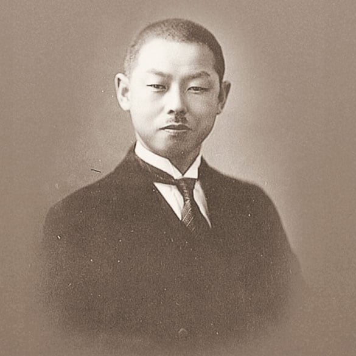
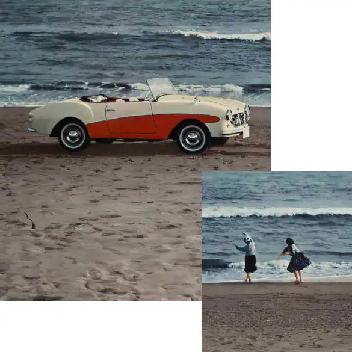
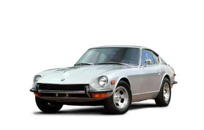
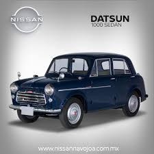
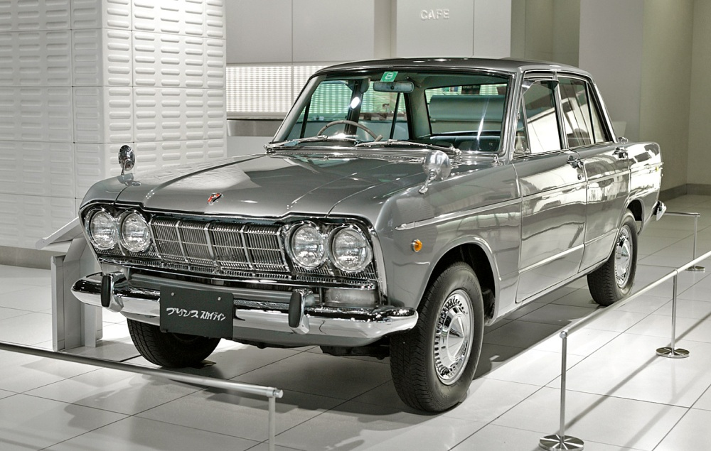
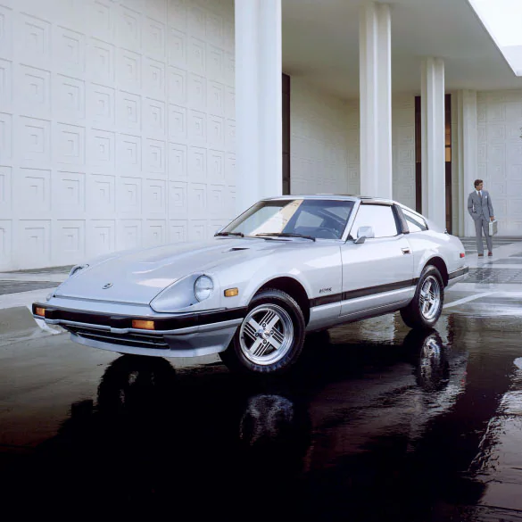
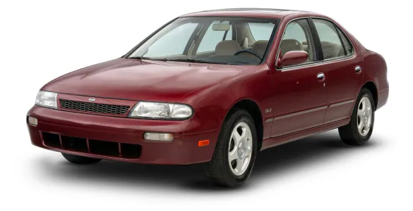
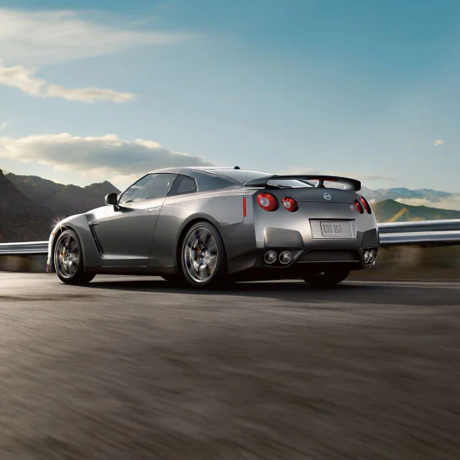
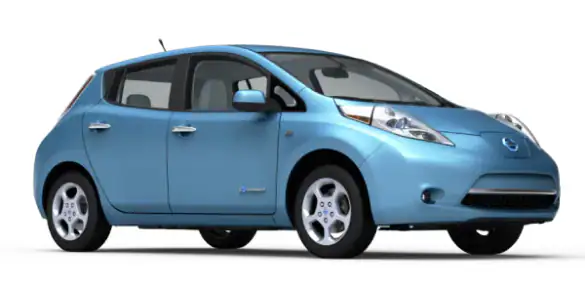

El fabricante mundial de automóviles conocido hoy como Nissan debutó por primera vez en 1911, cuando se fundó en Tokio la Kwaishinsha (Kaishinsha) Motor Car Works. 3 años más tarde se produjo su primer modelo DAT, un acrónimo de los apellidos iniciales de los inversionistas.
Nissan presentó sus primeros modelos Datsun (un auto y camioneta de 1000 cc) en Estados Unidos durante la Feria del Automóvil de Los Ángeles de 1959. Para mantenerse al ritmo de la creciente demanda mundial, Nissan comenzó la producción de vehículos en México en 1966. Siguió con la producción en Australia y Taiwán, y abrió su primera fábrica de Estados Unidos en Smyrna, Tennessee, en 1983.
En 1971, por primera vez en los Estados Unidos, las ventas anuales sobrepasaron los 250,000 autos. Nissan también se estableció en la pista, ya que los legendarios Datsun 510 y 240Z dominaron las carreras en dos continentes. En 1973, se vendió el auto 1 millón en EE. UU.. En 1979, se estableció Nissan Design America (NDA) en La Jolla, California, con el mandato de incorporar el estilo y los conceptos americanos a los vehículos Nissan. A lo largo de los años, NDA nos ha ofrecido el original Altima®, el original Pathfinder®, el modular Pulsar NX y la Xterra®.
Aunque el primer Nissan -en realidad, un Datsun- se fabricó en 1914, el nombre Nissan no apareció realmente hasta 1933, cuando su fundador, Yoshisuke Aikawa, ingresó a la Nihon Sangyo Company en la Bolsa de Tokio con el nombre: NISSAN. En los 91 años transcurridos desde entonces, el nombre Nissan ha llegado a ser conocido en casi todos los rincones del mundo.
La historia de la marca Nissan inicia en 1933 cuando las empresas japonesas Tyobata Imono y Nihon Sangyo se unieron en sus fortalezas y decidieron fundar sus capacidades juntas y crear una compañía (Jidosha Seizo), dedicada a la fabricación y venta de automóviles de la marca Datsun. Luego de altibajos, plagio y problemas internos, la empresa Sangyo es propietaria de todos los bienes ganados durante la fusión de la compañía y más tarde decide cambiar la firma de Seizo y nombrarla Nissan, siendo fundada así por Masujiro Hashimoto. En ese momento, nos remontamos al período de la Segunda Guerra Mundial, esto significó un período devastador para el mundo automotriz y para la sociedad en general, en cuanto a infraestructura, economía y bienes personales, como lo era un automóvil. Cuando se concreta la guerra y se le da finalmente su fin, al no tener nuevas ideas tecnológicas para sus modelos, Nissan determina asociarse con Aston Martin, con la finalidad de tener acceso a nuevos motores, diseños y modelos. Este período de asociación con la firma Aston duró 7 años, lo que bastó para expandir su compañía y cautivar con sus nuevos diseños a la clientela japonesa.
Nissan creció sobre la base de sus éxitos de los años 70, tanto en las salas de exposición como en los circuitos. Nissan Motor Manufacturing Corporation (NMMC) se estableció en Smyrna, Tennessee, para satisfacer la creciente demanda de vehículos Nissan. En 1989, Nissan fabricó el vehículo 1 millón en suelo estadounidense. En la pista, la leyenda de Hollywood Paul Newman consiguió el 50.º Campeonato Nacional del SCCA de Nissan, tras las victorias consecutivas en 1985 y 1986 con el Newman/Sharp Trans-Am 300ZX®.
En 1991, Nissan recibe su primer premio ambiental de la EPA y toma un gran salto hacia la tecnología ecológica al prestar su vehículo de combustible alterno a un programa de pruebas en California e introducir el prototipo del vehículo eléctrico del futuro. En 1997, Nissan es nombrada "La mejor de las mejores" por la Agencia de Protección Medioambiental. Un logro adicional, en 1992 se vendió el Nissan Sentra número 2 millones en Estados Unidos.
Nissan casi ha duplicado el número de modelos que ofrece y casi ha duplicado sus ventas. En diez años, la diversa gama ha crecido hasta incluir la primera camioneta Nissan grande, la TITAN®, junto con una tecnología híbrida totalmente nueva y un superauto del siglo XXI. Y esto es sólo el principio de lo que está por venir.
Nissan ayudó a liderar la industria automotriz en la era de los vehículos eléctricos cuando debutó con el Nissan LEAF® totalmente eléctrico, y a lo largo de la década, continuó su tradición de innovación que emociona con vehículos totalmente nuevos como el Nissan Kicks y la tecnología de seguridad con su conjunto de características de seguridad disponibles del Escudo de protección Safety Shield 360
